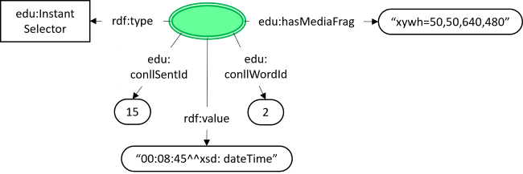

Educational videos represent one of the most popular formats in online education, but they can also suffer of several limitations. They can for instance be lengthy and thus hard to navigate when you need to recall concepts; besides, they generally lack explicit tables of contents or other indexing systems for exploring the video content.
To solve this problem, the first step is to have an effective representation of the content of the video, with a data model which is able to encode both concepts which are explained in it and evolving relations between them, relating concepts with their prerequisite (weak or strong).
The Edurell Data Model describes a structured model to annotate video resources with the concepts which are explained and with prerequisite relationships between those concepts. This data model is mainly based on the use of the Web Annotation Ontology [annotation-ontology], extended with some classes and properties belonging to the newly-developed Edurell Ontology [edu-ontology].
This section describes the status of this document at the time of its publication. Other documents may supersede this document.
This document is a working draft.
This section is non-normative.
The specification is divided into two major sections: the terms defined in the Edurell Ontology, and terms from other ontologies used in the model.
Each class lists the recommendations from the model for the REQUIRED, RECOMMENDED and OPTIONAL object and data properties for instances of the class. Instances may, of course, be the subject of any other triples that implementers find useful, however there is no expectation of interoperability in these cases.
| Prefix | Namespace | Description |
|---|---|---|
| oa | http://www.w3.org/ns/oa# | [annotation-ontology] |
| as | http://www.w3.org/ns/activitystreams# | [activitystreams-vocabulary] |
| dc | http://purl.org/dc/elements/1.1/ | [DC11] |
| dcterms | http://purl.org/dc/terms/ | [DC-TERMS] |
| dctypes | http://purl.org/dc/dcmitype/ | [DC-TERMS] |
| foaf | http://xmlns.com/foaf/0.1/ | [FOAF] |
| rdf | http://www.w3.org/1999/02/22-rdf-syntax-ns# | [rdf-schema] |
| rdfs | http://www.w3.org/2000/01/rdf-schema# | [rdf-schema] |
| schema | http://schema.org/ | schema.org |
| skos | http://www.w3.org/2004/02/skos/core# | [skos-reference] |
| xsd | http://www.w3.org/2001/XMLSchema# | [xmlschema-2] |
The examples throughout the document are serialized as [Turtle] with the prefixes taken from the namespace declarations given in Section 1.1. The examples are informative only.
The diagrams use the following style
anno1 is a specific instance of an Annotation, whereas Annotation is a class.As well as sections marked as non-normative, all authoring guidelines, diagrams, examples, and notes in this specification are non-normative. Everything else in this specification is normative.
The key words MAY, MUST, MUST NOT, OPTIONAL, RECOMMENDED, REQUIRED, and SHOULD are to be interpreted as described in [RFC2119].
The Edurell model is based on a set of annotations made accordingly to the Web Annotation Ontology specification [annotation-ontology]. Three types of annotations are possible, each marked by a different Motivation (oa:motivatedBy property).
The Edurell knowledge graph is made up of a series of videos. Each of them MAY be associated with 0 or 1 ConLL file through the usage of a ConLL Annotation.
Segments of the video, identified by a RangeSelector, may be annotated to specify the concept(s) that are explained in such segments through a Concept Annotation.
A specific instant of the video, identified through an InstantSelector, may be annotated to specify a prerequisite relation with another concept existing from that time by using a Prerequisite Annotation.
Each video resource MAY be associated with at most one ConLL file, used to describe the words of the video transcription.
| Property | Value or Range |
Description |
|---|---|---|
| rdf:type | oa:Annotation | Each annotation MUST be of class oa:Annotation according to the Web Annotation specification [annotation-ontology].
Properties other than those expressed here MAY be added according to the original documentation. |
| oa:motivatedBy | edu:linkingConll | A ConLL Annotation MUST have exactly 1 motivation corresponding to edu:linkingConll, which extends the original oa:linking motivation from [annotation-ontology].
|
| oa:hasBody | dctypes:Text |
A video MAY have a single ConLL file associated, thus a ConLL Annotation MUST a have a single Body representing a ConLL file. Its type SHOULD be dctypes:Text. If an associated ConLL file does not exist, no ConLL annotations for that video should exist.
|
| oa:hasTarget | dctypes:MovingImage |
Each ConLL file represents the transscription of a single video, thus a ConLL Annotation MUST have a single Target representing a ConLL file. Its type SHOULD be dctypes:MovingImage. If an associated ConLL file does not exist, no ConLL annotations for that video should exist.
|
<http://example.org/anno1> a oa:Annotation ; oa:motivatedBy edu:linkingConll ; oa:hasBody <http://example.org/conll1> ; oa:hasTarget <http://example.org/video1> ; dcterms:creator <http://example.org/person1> ; dcterms:created "2021-01-24T18:17:03Z" . <http://example.org/video1> a dctypes:MovingImage ; <http://example.org/conll1> a dctypes:Text ; <http://example.org/person1> a foaf:Person ;
A video lesson, but more in general every long-form informative content, may be about different concepts, which are developed along the content. Concepts may intertwine with one another, so that some parts of the resource may be about more than one concept at a time.
The Concept Annotation is used to annotate a portion of the video with the concept it's about. It is possible to specify whether a segment of video contains a definition of a concept or an expansion of it, for example when adding details to a previously introduced one. The combination of all annotations of this type provides a complete map of all concepts which are explained, with the possibility for concepts to be repeated throughout the video.
| Property | Value or Range |
Description |
|---|---|---|
| rdf:type | oa:Annotation | Each annotation MUST be of class oa:Annotation according to the Web Annotation specification [annotation-ontology].
Properties other than those expressed here MAY be added according to the original documentation. |
| oa:motivatedBy | oa:describing | A Concept Annotation MUST have exactly 1 motivation corresponding to oa:describing, which is used because this kind of annotation has the goal of describing the concept explained in the selected section.
|
| oa:hasBody | skos:Concept |
The concept which is the topic of the annotated segment. Each portion of the video MAY be associated with 1 or more concepts. |
| oa:hasTarget | oa:SpecificResource |
The segment of the video (and, optionally, the associated portion of text) of which the annotation states the topic. Check out 2.2.1 Target |
| skos:note | "conceptDefinition" or "conceptExpansion" | A literal expressing whether the annotated segment is defining the specified concept (conceptDefinition) or is adding details to a concept which (presumably) has been already introduced (conceptExpansion). |
Each Concept Annotation MUST have 1 or more Targets of type oa:SpecificResource. Multiple targets are to be intended as multiple segments of one ore more resources that are associated with the same concept. If this is the case, multiple annotations can also be used instead.
The Target is used to identify both the video resource which is being annotated and the specific portion of the video.
| Term | Value or Range |
Description |
|---|---|---|
| rdf:type | oa:SpecificResource | The class of the Target. Each Concept Annotation MUST have exactly 1 Target of type oa:SpecificResource, according to the Web Annotation specification [annotation-ontology].
Properties other than those expressed here MAY be added according to the original documentation. |
| oa:hasSource | dctypes:MovingImage |
The original video resource the annotated segment is part of. Each Concept Annotation Target MUST have exactly 1 video resource as Source. A ConLL file describing the video transcription MAY be associated to the video using a ConLL Annotation. |
| oa:hasSelector | oa:RangeSelector |
A RangeSelector is used to select the beginning and end instants of the segment this annotation refers to. A more accurate description of how to use this selector within this ontology is provided at 3.2 RangeSelector. See also the original documentation [annotation-ontology]. |
<http://example.org/anno1> a oa:Annotation ; oa:motivatedBy oa:describing ; oa:hasBody <http://example.org/sexual_dimorphism> ; oa:hasTarget [ a oa:SpecificResource ; oa:hasSource <http://example.org/video1> ; oa:hasSelector [ a oa:RangeSelector ; oa:hasStartSelector [ a edu:InstantSelector ; rdf:value "00:08:28^^xsd:dateTime" ; edu:conllSentId 3 ; edu:conllWordId 7 ] ; oa:hasEndSelector [ a edu:InstantSelector ; rdf:value "00:08:45^^xsd:dateTime" ; edu:conllSentId 5 ; edu:conllWordId 2 ] ] ] ; skos:note "conceptDefinition" ; dcterms:creator <http://example.org/person1> ; dcterms:created "2021-04-18T12:10:04Z" . <http://example.org/sexual_dimorphism> [ a oa:CssSelector ; skos:prefLabel "sexual dimorphism" ] . <http://example.org/video1> a dctypes:MovingImage ; <http://example.org/person1> a foaf:Person ;
A video lesson, but more in general every long-form informative content, is made up of different concepts evolving over time, which may be linked by relationships of prerequisite, so that one or more concepts may be needed to understand another. These relationships may evolve over time as well, so that a concept might gain new prerequisites along the explanation, or a prerequisite may change strength, for example when a concept is first introduced in a general way, then explained in more detail.
The Prerequisite Annotation allows to state a prerequisite relationship existing at a specific point in the video, with an indication of its strength (either strong or weak). The specific term which is being annotated (i.e. the concept the prerequisite is associated with) may also be directly linked with a specific word in the transcription of the video by using the appropriate conll properties of InstantSelector. Check 3.2.1 InstantSelector for more information.
| Property | Value or Range |
Description |
|---|---|---|
| rdf:type | oa:Annotation | Each annotation MUST be of class oa:Annotation according to the Web Annotation specification [annotation-ontology].
Properties other than those expressed here MAY be added according to the original documentation. |
| oa:motivatedBy | edu:linkingPrerequisite | A Prerequisite Annotation MUST have exactly 1 motivation corresponding to edu:linkingPrerequisite, which extends the original oa:linking motivation from [annotation-ontology].
|
| oa:hasBody | skos:Concept |
The concept which is a prerequisite of the Target. Each Concept Annotation MAY have 1 or more bodies, if the target concept (as selected by the InstantSelector of the Target) has multiple prerequisite relationships of same strength at the same time.
|
| oa:hasTarget | oa:SpecificResource |
The concept the prerequisite is associated with. Also used to state the instant in the video (and, optionally, the specific word in the associated ConLL file) where the relationship is intantiated. Check out 2.3.1 Target |
| skos:note | "strongPrerequisite" or "weakPrerequisite" | A literal expressing the strength of the prerequisite relationship for the target concept at the time of the video selected by the InstantSelector. Since a prerequisite relationship, once instantiated at a point of the video, is intended to remain valid until the end, a "weakPrerequisite" SHOULD NOT be stated between the same concepts previously linked by a "strongPrerequisite" relationships.
|
Each Prerequisite Annotation MUST have 1 or more Targets of type oa:SpecificResource. Multiple targets are to be intended as multiple segments of one ore more resources that are associated with the same prerequisite. If this is the case, multiple annotations can also be used instead.
The Target is used to identify both the concept which is being annotated, i.e., the concept for which the annotation states a prerequisite, and its position within the video resource (and, optionally, the linked ConLL file).
| Term | Value or Range |
Description |
|---|---|---|
| rdf:type | oa:SpecificResource | The class of the Target. Each Prerequisite Annotation MUST have exactly 1 Target of type oa:SpecificResource, according to the Web Annotation specification [annotation-ontology].
Properties other than those expressed here MAY be added according to the original documentation. |
| dcterms:subject | skos:Concept |
The concept which is being annotated, i.e., the concept for which the annotation states a prerequisite. Each Prerequisite Annotation Target MUST annotate exactly 1 concept. |
| oa:hasSource | dctypes:MovingImage |
The original video resource the annotated concept is part of. Each Prerequisite Annotation Target MUST have exactly 1 video resource as Source. A ConLL file describing the video transcription MAY be associated to the video using a ConLL Annotation. |
| oa:hasSelector | oa:RangeSelector |
An InstantSelector is used to select the specific instant in the video (and, optionally, the specific word in the associated ConLL file) this annotation refers to. The annotated instant must correspond to a point in the video where the target concept, i.e., the concept for which the annotation states a prerequisite, is present, either visually or in the audio track.
|
<http://example.org/anno2> a oa:Annotation ; oa:motivatedBy oa:linkingPrerequisite ; oa:hasBody <http://example.org/functional_morphology> ; oa:hasTarget [ a oa:SpecificResource ; dcterms:subject <http://example.org/sexual_dimorphism> ; oa:hasSource <http://example.org/video1> ; oa:hasSelector [ a edu:InstantSelector ; rdf:value "00:06:42^^xsd:dateTime" ; edu:conllSentId 11 ; edu:conllWordId 2 ; edu:hasMediaFrag "xywh=50,50,640,480" ] ] ; skos:note "strongPrerequisite" ; dcterms:creator <http://example.org/person1> ; dcterms:created "2021-01-24T18:17:03Z" . <http://example.org/functional_morphology> [ a oa:CssSelector ; skos:prefLabel "functional morphology" ] . <http://example.org/sexual_dimorphism> [ a oa:CssSelector ; skos:prefLabel "sexual dimorphism" ] . <http://example.org/video1> a dctypes:MovingImage ; <http://example.org/person1> a foaf:Person ;
It is suggested to associate each annotation with appropriate Lifecycle Information, according to the original Web Annotation Data Model [annotation-model].
The Edurell Data Model makes use of two Selectors:
The Edurell Ontology declares a custom An InstantSelector has type The timestamp of the selected time instant in the video. An InstantSelector MUST have exactly 1 Optional property. When a ConLL file is associated to the video resource through a This property corresponds to the Optional property. When a ConLL file is associated to the video resource through a This property corresponds to the Optional property. This property MAY be used only when the This property is used to indicate a rectangular portion of the frame of the video at the selected timestamp ehere the annotated concept is present. It MUST use only the spatial dimension of the media-frag specification.
The Edurell Data Model makes use of edu:InstantSelector, declared by the Edurell Ontology, which is used to select a specific instant in the video (and, optionally, a specific word in the associated ConLL file and a region in a video frame), and oa:RangeSelector, which combines two InstantSelectors to identify a segment of the video.
3.1 InstantSelector
edu:InstantSelector to select a specific instant in the video. The custom selector also has additional optional properties that may be used to link a time instant of the video with the corresponding word in a ConLL file associated to the video resource through a ConLL Annotation.

3.1.1 rdf:type
edu:InstantSelector.3.1.2 rdf:value
rdf:value property. The timestamp MUST be expressed with only the time-of-day part of xsd:dateTime, with no date nor timezone expressed.3.1.3 edu:conllSentId
ConLL Annotation, this property is used together with edu:conllWordId to associate a specific word in the ConLL file with the selected time instant of the video. This property MUST NOT be present if no ConLL Annotation exists for the current video.sent_id value of the ConLL file, identifying the sentence the selected word is part of. If the edu:conllWordId property is present, then edu:conllSentId MUST be present as well, and vice-versa.3.1.4 edu:conllWordId
ConLL Annotation, this property is used together with edu:conllSentId to associate a specific word in the ConLL file with the selected time instant of the video. This property MUST NOT be present if no ConLL Annotation exists for the current video.ID value of a word in the ConLL file, inside of the sentence identified by the edu:conllSentId property. If the edu:conllSentId property is present, then edu:conllWordId MUST be present as well, and vice-versa.3.1.5 edu:hasMediaFrag
InstantSelector is used for a Prerequisite Annotation and MUST NOT be used when its used as part of a RangeSelector for a Concept Annotation.
3.2 RangeSelector
oa:RangeSelector from Web Annotation Ontology [annotation-ontology] to select a segment of video and, optionally, a segment of associated text transcription trough an associated ConLL file. Within the Edurell Data Model, startSelector and endSelector both use InstantSelector.
Model
Property
Value or
RangeDescription
rdf:type
oa:Annotation
RangeSelector is part of the Web Annotation Ontology [annotation-ontology].
Properties other than those expressed here MAY be added according to the original documentation.
oa:hasStartSelector
edu:InstantSelectorThe initial instant of the selected interval.
oa:hasEndSelector
edu:InstantSelectorThe final instant of the selected interval.
The Edurell Data Model has 3 types of Annotations (see 2. Edurell Annotations), distinguished by the Motivation associated with each one of them.
The Edurell Ontology uses the oa:describing Motivation from the Web Annotation Ontology [annotation-ontology] an extends the original oa:linking ontology with two newly declared Motivations, edu:linkingConll and edu:linkingPrerequisite.
Motivation used for a ConLL Annotation. Extends the original oa:linking Motivation.
Motivation used for a Prerequisite Annotation. Extends the original oa:linking Motivation.
Motivation used for a Concept Annotation. Part of the original Web Annotation Ontology [annotation-ontology].